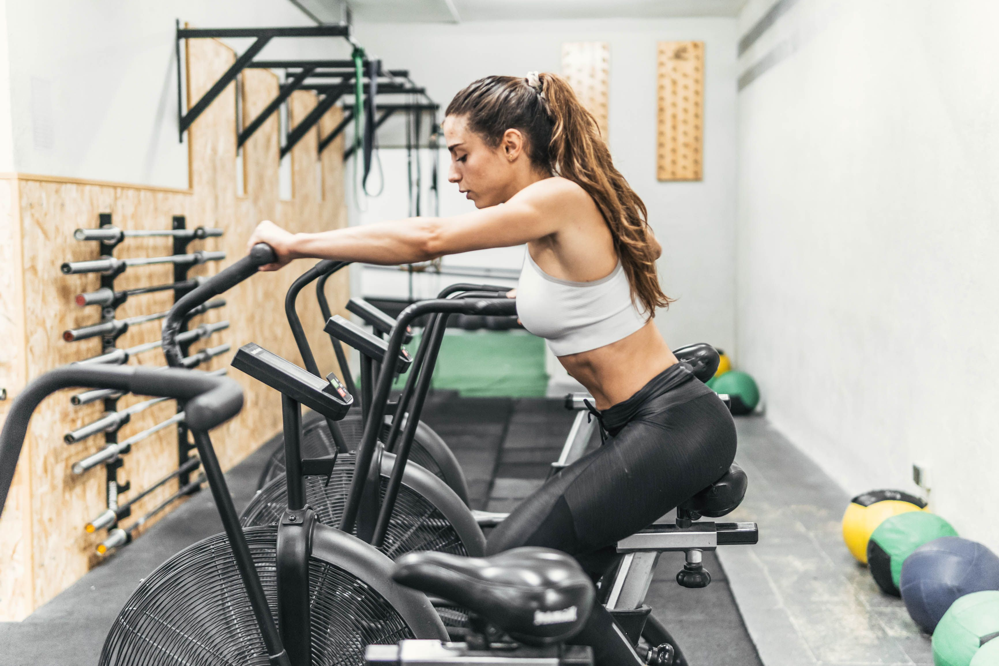

Rutina de entrenamiento con pesas (para tonificar todo el cuerpo):

Calentamiento: 5-10 minutos de ejercicios cardiovasculares ligeros (por ejemplo, correr en el lugar, saltar la cuerda o hacer bicicleta estática). Sentadillas: 3 series de 12 repeticiones. Press de banca (con mancuernas o barra): 3 series de 10 repeticiones. Peso muerto (con barra o mancuernas): 3 series de 10 repeticiones. Fondos de tríceps (en paralelas o con banco): 3 series de 12 repeticiones. Elevaciones laterales (con mancuernas): 3 series de 12 repeticiones. Plancha abdominal: 3 series de 30 segundos. Estiramientos: 5-10 minutos para enfriar y estirar los principales grupos musculares.
Rutina de entrenamiento cardiovascular (para quemar grasa y mejorar la resistencia):
Calentamiento: 5-10 minutos de estiramientos y ejercicios cardiovasculares ligeros. Carrera continua: 30-45 minutos a un ritmo constante y cómodo. Entrenamiento HIIT (Intervalos de Alta Intensidad): 10 rondas de 30 segundos de sprints seguidos de 30 segundos de descanso. Saltos al cajón: 3 series de 15 repeticiones. Burpees: 3 series de 10 repeticiones. Skipping (correr en el lugar levantando las rodillas lo más alto posible): 3 series de 30 segundos. Estiramientos: 5-10 minutos para enfriar y estirar los músculos trabajados.
Rutina de yoga (para mejorar la flexibilidad y reducir el estrés):

Saludo al sol: Realiza 5-10 repeticiones para calentar todo el cuerpo. Postura del perro boca abajo (Adho Mukha Svanasana): Mantén la posición durante 1 minuto. Guerrero I (Virabhadrasana I): Mantén la posición durante 30 segundos en cada lado. Postura del árbol (Vrksasana): Mantén la posición durante 1 minuto en cada lado. Postura del niño (Balasana): Mantén la posición durante 1-2 minutos para relajarte. Postura del puente (Setu Bandhasana): Mantén la posición durante 30 segundos. Respiración profunda y relajación: Siéntate o acuéstate en Savasana durante 5-10 minutos para finalizar la sesión.